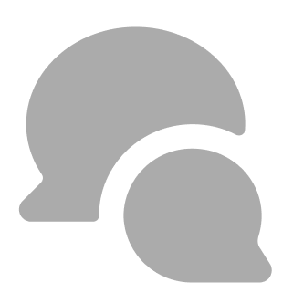

เอาล่ะค้าฟฟ เราจะมาสอนการใช้ฟอรั่มใน Discord กัน โดยฟอรั่มจะมีสัญลักษณ์แบบนี้  ให้น้องๆได้เข้าไปโพสต์ไปตอบกลับเพื่อนๆ สำหรับคนยังงงๆอยู่ว่ามันโพสต์ยังไง มันใช้ยังไงน้าา เดี๋ยววันนี้แมวปั้น นกเงือกใหญ่ บ้านสักงายจะมาสอนเอง อิอิ
วิธีการโพสต์
1.อย่างแรกเลยน่ะ ให้กดสร้างโพสต์ตรงที่มีกรอบสีแดงของพี่ที่ทำไว้ อิอิ
โทรศัพท์มือถือ

คอมพิวเตอร์
2.ก่อนเริ่มพิมพ์ให้อ่านกฎก่อนด้วยนะ กฎพื้นฐานสำหรับทุกฟอรั่มจะมีดังนี้นะคร้าบ
- งดใช้ถ้อยคำหยาบคาย / กล่าวถึงบุคคลอื่นในทางลบ
- ตรวจสอบก่อนโพสต์
- หลีกเลี่ยงการเร่งผู้ตอบ
- ปิดโพสต์ (Close Post) หลังจากได้คำตอบหรือหลังจากจบบทสนทนาทุกครั้ง
2.1.น้องๆใส่หัวข้อแล้วก็อธิบายได้เลย เพิ่มรูปภาพก็ได้นะ เกร๋เว่อ
3.อย่าลืมใส่แท็กให้พี่ด้วยน้า ใส่แท็กให้ตรงกับเรื่องที่เล่า อย่าใส่มั่วระวังโดนแบนเด่อ


4.พิมพ์เสร็จแล้วก็โพสต์โลดลูกหล่า

โทรศัพท์มือถือ
คอมพิวเตอร์
วิธีการปิดโพสต์
เวลาที่เราได้คำตอบจากสิ่งที่เราตั้งคำถามในฟอรั่มแล้วเนี่ย ให้เราปิดโพสต์ทุกครั้งเพื่อจะได้ให้มันไปอยู่ในหมวดหมู่โพสต์ที่เก่ากว่า และทำให้โพสต์เราไม่ไปบังโพสต์เพื่อนๆคนอื่นที่กำลังหาคำตอบอยู่
ถ้าโทรศัพท์เรากดค้างที่โพสต์ของเรา ถ้าในคอมให้คลิกขวาจะปรากฎปุ่มปิดโพสต์ให้เรา เราก็กดไปเรยยย

โทรศัพท์มือถือ

คอมพิวเตอร์
เสร็จแล้วจ้า จุ๊บๆ